Double Cardan Joint
NOTE: Individual components of cardan universal joints are not serviceable. If worn or leaking, they must be replaced as an assembly.DISASSEMBLY
1. Remove the propeller shaft.
2. Using a soft drift, tap the outside of the bearing cap assembly to loosen snap ring.
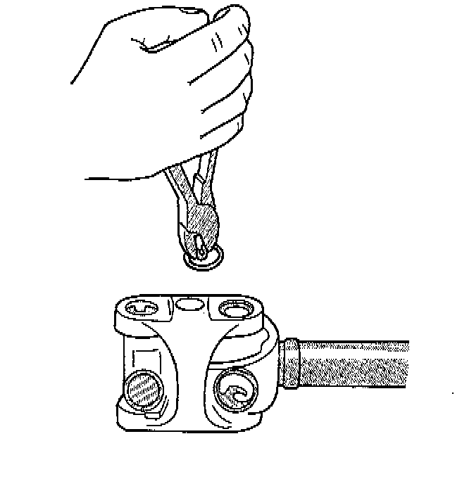
3. Remove all the bearing cap snap rings.
4. Set the joint in an arbor press or vise with a socket whose inside diameter is large enough to receive the bearing cap positioned beneath the link yoke.
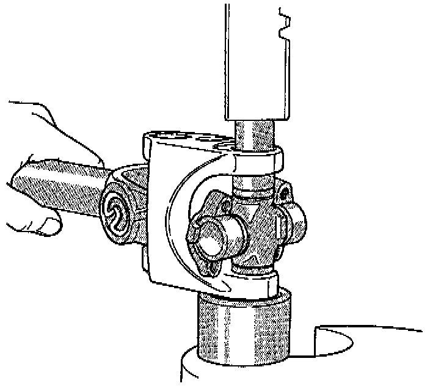
5. Place a socket with an outside diameter smaller than the upper bearing cap on the upper bearing cap and partially press one bearing cap from the outboard side of the link yoke enough to grasp the bearing cap with vise jaws. Be sure to remove grease fittings that interfere with removal.
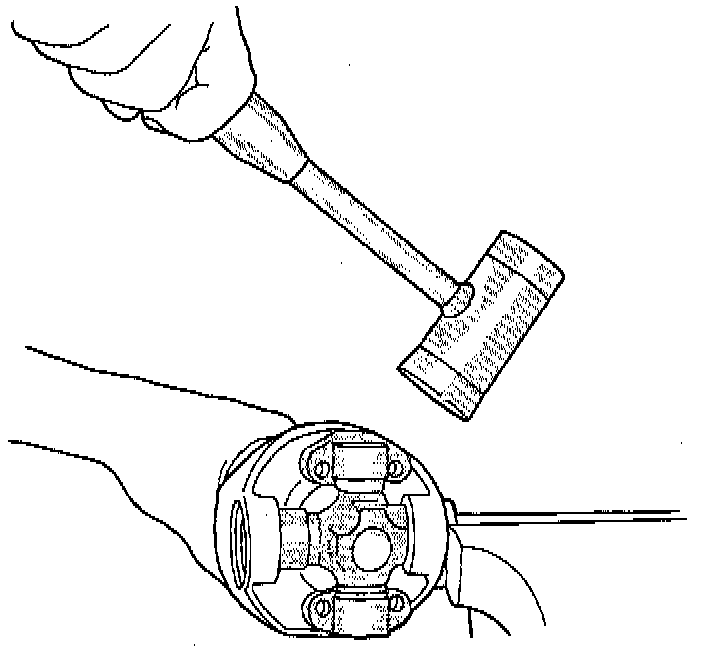
6. Grasp the protruding bearing by vise jaws. Tap the link yoke with a mallet and drift to dislodge the bearing cap from the yoke.
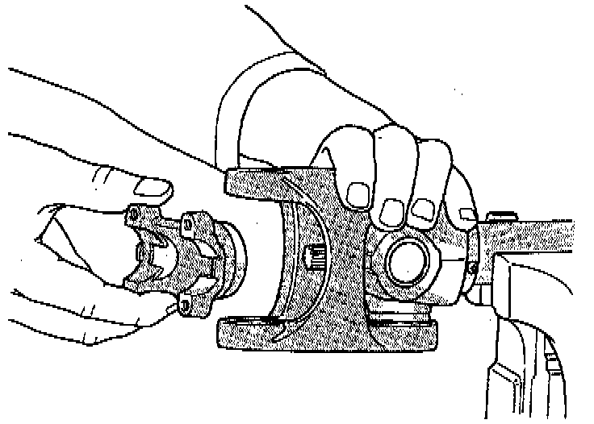
7. Flip assembly and repeat Step 4, Step 6, and Step 6 to remove the opposite bearing cap. This will then allow removal of the cross centering kit assembly and spring.
8. Press the remaining bearing caps out the other end of the link yoke as described above to complete the disassembly.
NOTE: During assembly, ensure that the alignment marks on the link yoke and propeller shaft yoke are aligned.
ASSEMBLY
1. Apply Extreme Pressure (EP) N.L.G.I. Grade 1 or 2 grease to inside of yoke bores to aid in installation.
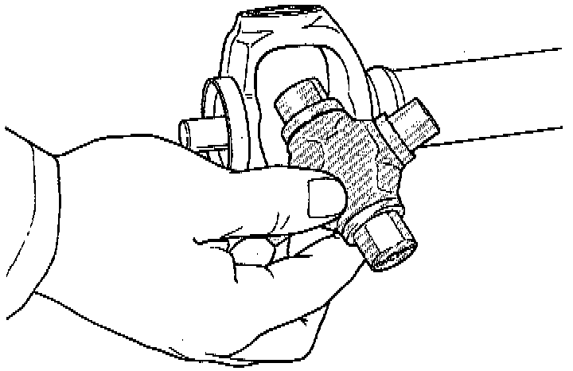
2. Fit a cross into the propeller shaft yoke.
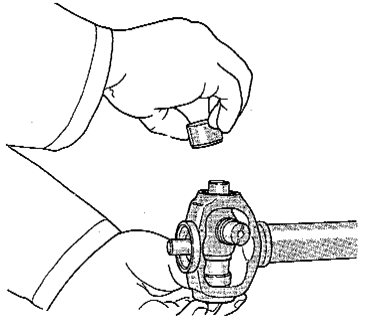
3. Place a bearing cap over the trunnion and align the cap with the yoke bore. Keep the needle bearings upright in the bearing assembly. A needle bearing lying at the bottom of the cap will prevent proper assembly.
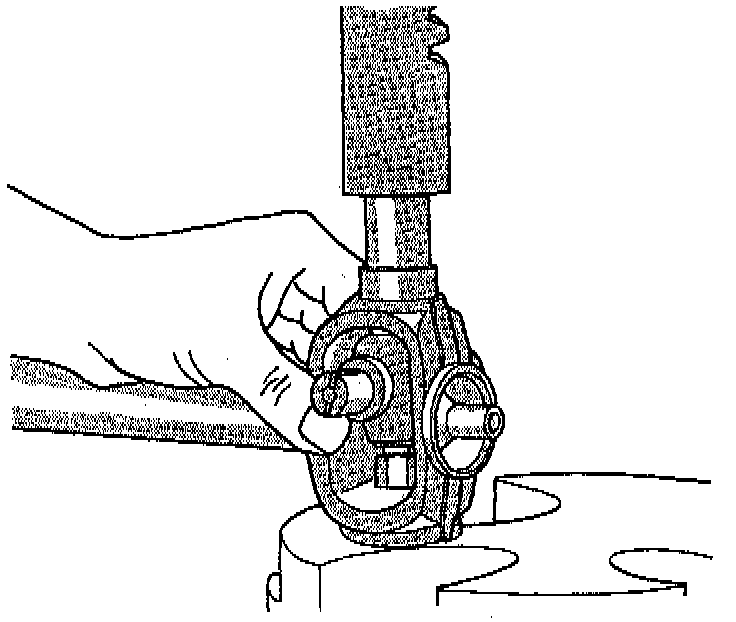
4. Press the bearing cap into the yoke bore enough to install a snap ring.
5. Install a snap ring.
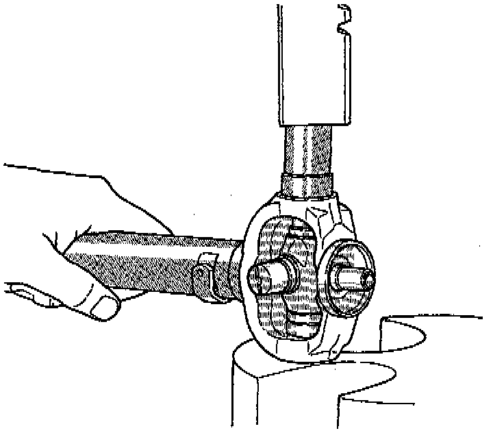
6. Flip the propeller shaft yoke and install the bearing cap onto the opposite trunnion. Install a snap ring.
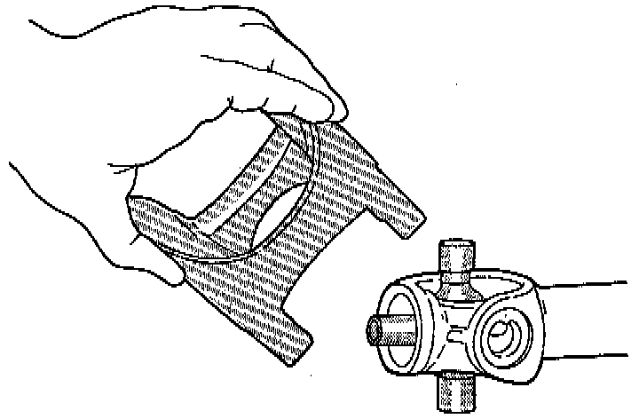
7. Fit the link yoke on the remaining two trunnions and press both bearing caps into place.
8. Install snap rings.
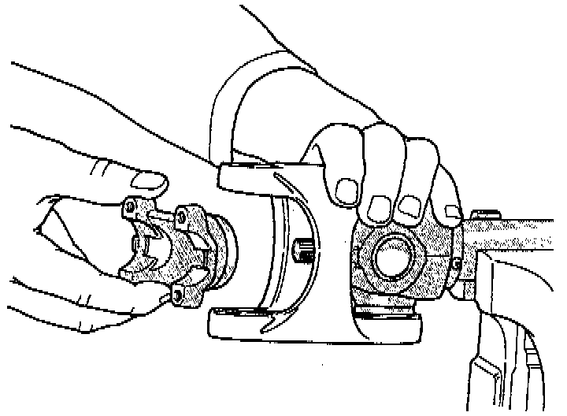
9. Install the centering kit assembly inside the link yoke making sure the spring is properly positioned.
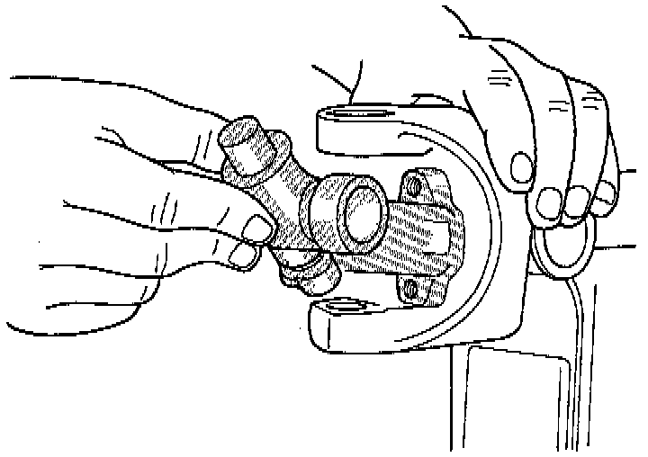
10. Place two bearing caps on opposite trunnions of the remaining cross. Fit the open trunnions into the link yoke bores and the bearing caps into the centering kit.
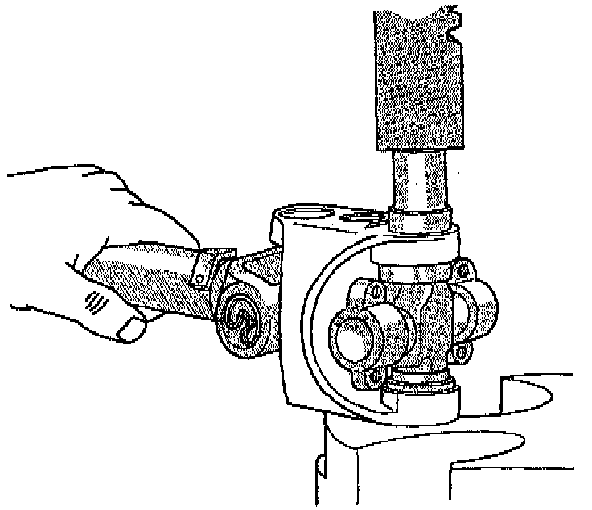
11. Press the remaining two bearing caps into mace and install snap ring.
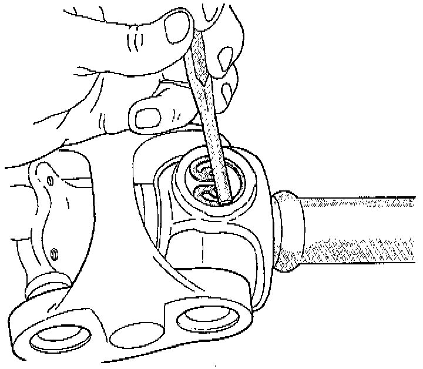
12. Tap the snap rings to allow them to seat into the Grooves.
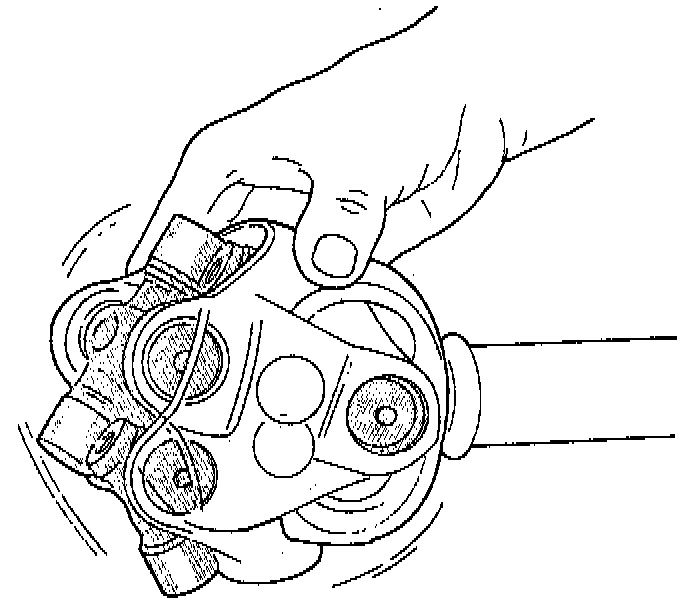
13. Check for proper assembly. Flex the joint beyond center, it should snap over-center in both directions when correctly assembled.
14. Install the propeller shaft.